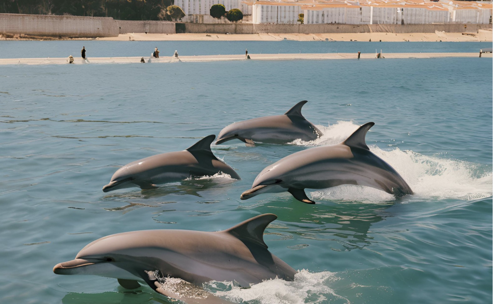

Setúbal
Setúbal, localizada na região sul de Portugal, é uma cidade costeira famosa pelas suas praias deslumbrantes, o Parque Natural da Arrábida e o saboroso peixe fresco, especialmente a sardinha assada. A cidade tem uma forte tradição pesqueira e oferece aos visitantes uma rica herança cultural, com monumentos como o Castelo de São Filipe e a Igreja de Jesus. Setúbal também é conhecida pelo seu ambiente animado, com mercados vibrantes, como o Mercado do Livramento, e uma excelente oferta gastronômica, que inclui mariscos frescos e pratos típicos da região.

Vantagens
- Beleza natural, com praias incríveis e vistas para a Serra da Arrábida.
- Ótima gastronomia, com destaque para os frutos do mar e as sardinhas.
- Cidade com um ambiente descontraído e acolhedor, ideal para relaxar.
- Parques naturais e áreas para atividades ao ar livre, como caminhadas e passeios de barco.
Desvantagens
- O calor intenso no verão pode ser desconfortável para alguns visitantes.
- A cidade pode ser um pouco tranquila fora da alta temporada, com menos opções de entretenimento.
- O trânsito nas áreas turísticas e nas praias pode ser intenso durante os meses de verão.
- Algumas ruas podem ser estreitas e difíceis de navegar, especialmente no centro histórico.